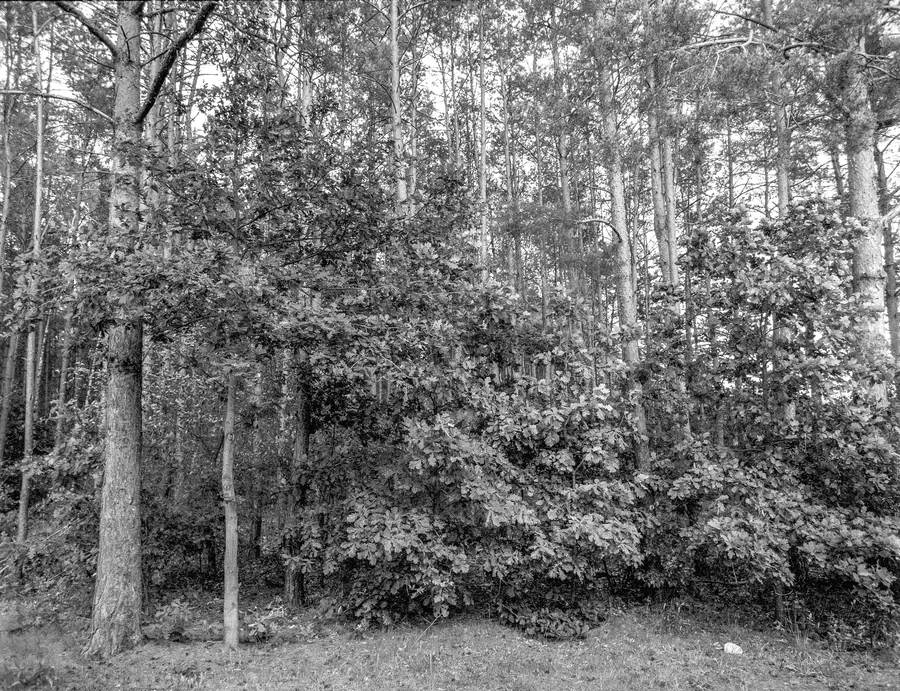
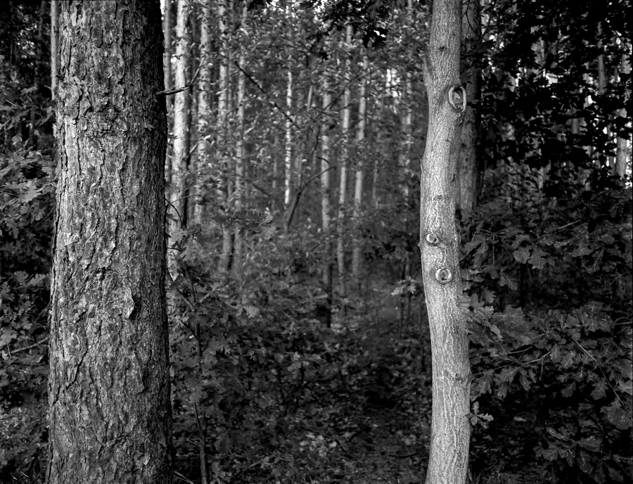
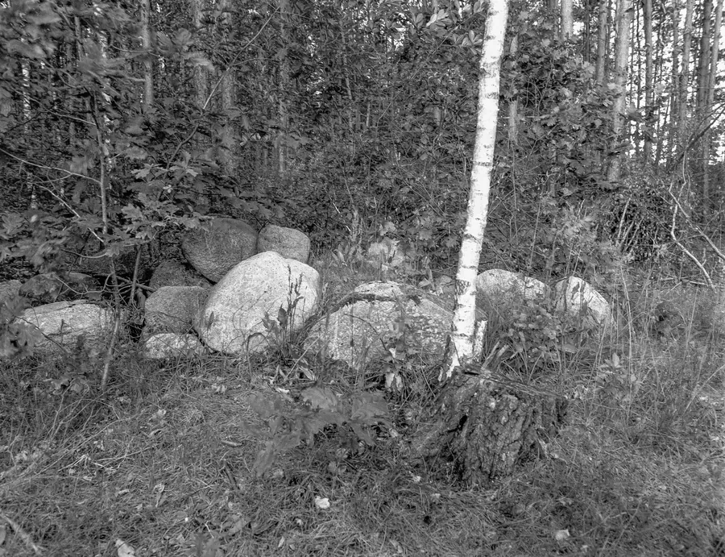
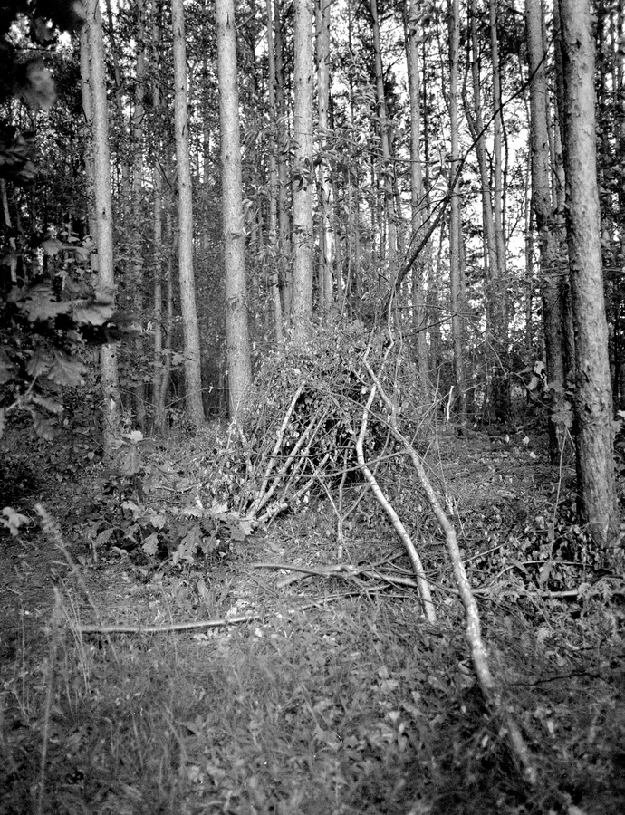
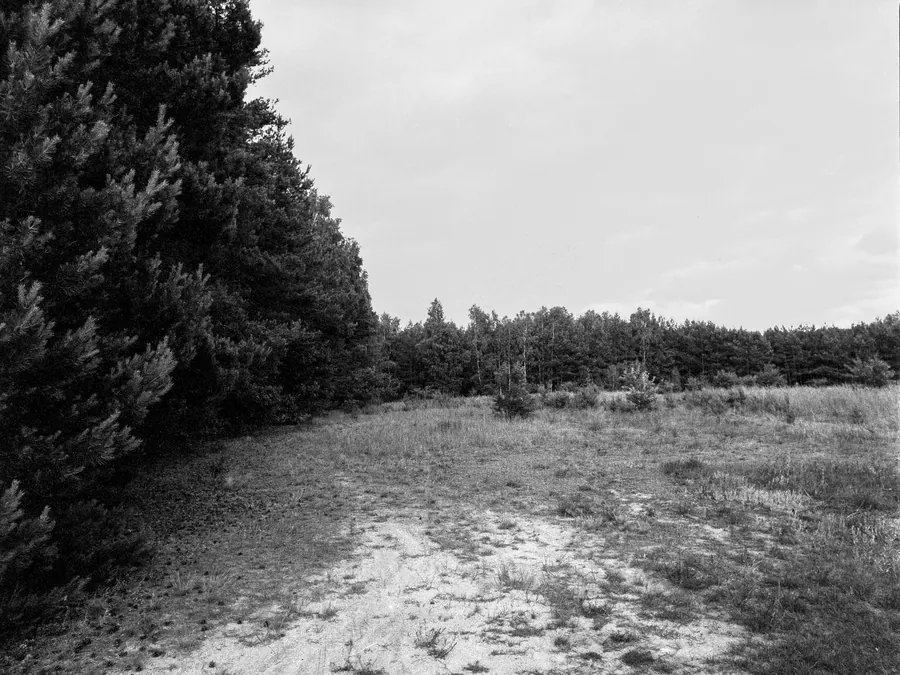

Przejdź do treści
Zenbliski
Menu
Archiwalne
Analogowe
Kolekcja
Akcesoria foto
Materiały reklamowe
Artykuły – blog
Foto ciekawostki
Cyfrowe
Analogowe
Bronica ETRSi, Zenzanon 40 mm, Fomapan 100/120, Mazowsze 2025 r.
Aparat
Bronica ETRSi
Obiektyw
Zenzanon 40 mm
Film
Fomapan 100, typ 120
Miejsce
Mazowsze, 2025 r.





Poprzednia
Voigtländer Bessa RF, Fomapan 100/120, Mazowsze 2024 r.
Następna
Nikon FE2, Nikkor 50 mm 1:1,4, Kodak Ektar 100, Gdańsk 2025 r.